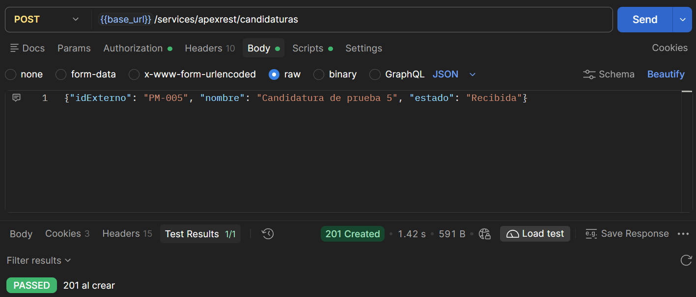
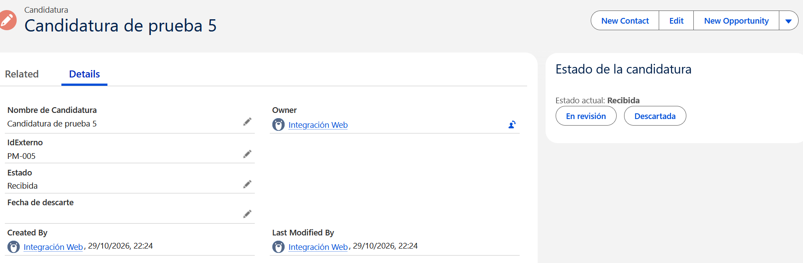
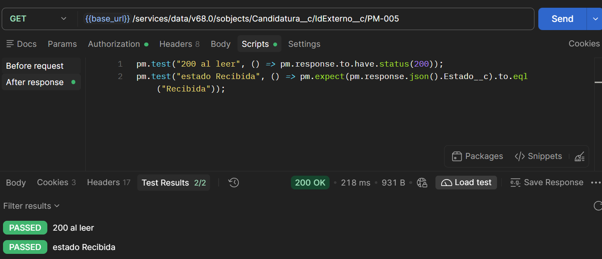
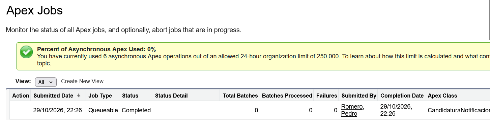
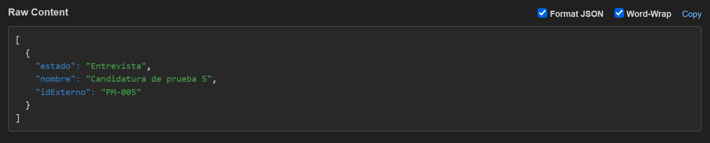

Proyecto personal · Salesforce
API de candidaturas en Salesforce
Este proyecto recibe candidaturas mediante una API REST, controla los cambios de estado y avisa a otro sistema cuando una candidatura pasa a entrevista.
Problema
Las candidaturas llegan desde un sistema externo. Si una pasa a Entrevista, hay que avisar a otra aplicación. El reto está en evitar duplicados y bloquear cambios de estado que no estén permitidos.
Arquitectura

Decisiones y alternativas descartadas
Una API REST propia. Necesitaba controlar la idempotencia por idExterno y devolver respuestas 400 y 409 concretas. Con la API estándar, esa lógica tendría que resolverla el sistema que hace la llamada.
Las transiciones se validan en el trigger. Así, las reglas también se aplican a los cambios desde la ficha y no solo a los que llegan por la API.
Validación en before update y aviso en after update. Primero compruebo si la transición es válida. Después, con el registro guardado, encolo un Queueable para hacer la llamada externa fuera del trigger.
Una petición por lote. En lugar de enviar una llamada por registro, agrupo hasta 200 en una sola. Reduce llamadas, aunque si falla la petición hay que reintentar el lote completo.
Finalizer para el reintento. El segundo intento depende del resultado del Queueable, no de una tarea programada. La limitación actual es que se ejecuta inmediatamente (ver límites).
-
Crear por API
Postman envía un POST a
/services/apexrest/candidaturascon el identificador externo, el nombre y el estado. La API responde 201.
Creación desde Postman con el test de código 201 en verde. -
Comprobar en el registro
La ficha muestra el estado actual y solo los botones de las transiciones permitidas. Desde Recibida se puede pasar a En revisión o a Descartada.

Componente de estado en la ficha. -
Leer por identificador externo
Un GET con
IdExterno__cdevuelve el estado actual. Los tests comprueban el código de respuesta y el estado.
Lectura del registro con los dos tests en verde. -
Pasar a Entrevista
El trigger valida la transición y encola un Queueable con las candidaturas que acaban de entrar en Entrevista. La llamada externa se hace en el job, no en el trigger.

El job termina en Completed, sin fallos. -
Enviar el lote
Un único POST lleva todo el lote. Cada elemento tiene
idExterno,nombreyestado.
Cuerpo JSON recibido en el destino.
Límites conocidos
- Reintento inmediato. Si el destino sigue sin responder, el segundo intento también puede fallar.
- Fallo final sin registro. Solo queda en el debug log, que caduca. No hay forma de saber qué candidaturas no llegaron.
- Sin clave de idempotencia en el callout. Si el destino procesa el lote y la respuesta se pierde, puede duplicar allí.
- Timeout por defecto. La llamada no tiene un tiempo de espera definido explícitamente.
- Anonimización parcial. El batch cambia el nombre y deja IdExterno__c. Pendiente de confirmar si identifica a una persona.
Puedes consultar cada punto y su estado en la auditoría del repositorio.
Documentación
- README decisiones, pasos de despliegue y límites de escalado. Leer en GitHub
- Colección Postman nueve peticiones con tests. Ver archivo